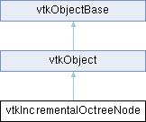

|
Etrek
|
|
Etrek
|
Octree node constituting incremental octree (in support of both point location and point insertion). More...
#include <vtkIncrementalOctreeNode.h>

Public Member Functions | |
| vtkTypeMacro (vtkIncrementalOctreeNode, vtkObject) | |
| void | PrintSelf (ostream &os, vtkIndent indent) override |
| void | DeleteChildNodes () |
| void | SetBounds (double x1, double x2, double y1, double y2, double z1, double z2) |
| void | GetBounds (double bounds[6]) const |
| double * | GetMinDataBounds () |
| double * | GetMaxDataBounds () |
| int | IsLeaf () |
| int | GetChildIndex (const double point[3]) |
| vtkIncrementalOctreeNode * | GetChild (int i) |
| vtkTypeBool | ContainsPoint (const double pnt[3]) |
| vtkTypeBool | ContainsPointByData (const double pnt[3]) |
| double | GetDistance2ToInnerBoundary (const double point[3], vtkIncrementalOctreeNode *rootNode) |
| double | GetDistance2ToBoundary (const double point[3], vtkIncrementalOctreeNode *rootNode, int checkData) |
| double | GetDistance2ToBoundary (const double point[3], double closest[3], vtkIncrementalOctreeNode *rootNode, int checkData) |
| void | ExportAllPointIdsByInsertion (vtkIdList *idList) |
| void | ExportAllPointIdsByDirectSet (vtkIdType *pntIdx, vtkIdList *idList) |
| int | GetNumberOfLevels () const |
| int | GetID () const |
| vtkIdList * | GetPointIds () const |
| vtkGetMacro (NumberOfPoints, int) | |
| vtkGetObjectMacro (PointIdSet, vtkIdList) | |
| vtkGetVector3Macro (MinBounds, double) | |
| vtkGetVector3Macro (MaxBounds, double) | |
| int | InsertPoint (vtkPoints *points, const double newPnt[3], int maxPts, vtkIdType *pntId, int ptMode, int &numberOfNodes) |
| Public Member Functions inherited from vtkObject | |
| vtkBaseTypeMacro (vtkObject, vtkObjectBase) | |
| virtual void | DebugOn () |
| virtual void | DebugOff () |
| bool | GetDebug () |
| void | SetDebug (bool debugFlag) |
| virtual void | Modified () |
| virtual vtkMTimeType | GetMTime () |
| void | PrintSelf (ostream &os, vtkIndent indent) override |
| void | RemoveObserver (unsigned long tag) |
| void | RemoveObservers (unsigned long event) |
| void | RemoveObservers (const char *event) |
| void | RemoveAllObservers () |
| vtkTypeBool | HasObserver (unsigned long event) |
| vtkTypeBool | HasObserver (const char *event) |
| vtkTypeBool | InvokeEvent (unsigned long event) |
| vtkTypeBool | InvokeEvent (const char *event) |
| std::string | GetObjectDescription () const override |
| unsigned long | AddObserver (unsigned long event, vtkCommand *, float priority=0.0f) |
| unsigned long | AddObserver (const char *event, vtkCommand *, float priority=0.0f) |
| vtkCommand * | GetCommand (unsigned long tag) |
| void | RemoveObserver (vtkCommand *) |
| void | RemoveObservers (unsigned long event, vtkCommand *) |
| void | RemoveObservers (const char *event, vtkCommand *) |
| vtkTypeBool | HasObserver (unsigned long event, vtkCommand *) |
| vtkTypeBool | HasObserver (const char *event, vtkCommand *) |
| template<class U, class T> | |
| unsigned long | AddObserver (unsigned long event, U observer, void(T::*callback)(), float priority=0.0f) |
| template<class U, class T> | |
| unsigned long | AddObserver (unsigned long event, U observer, void(T::*callback)(vtkObject *, unsigned long, void *), float priority=0.0f) |
| template<class U, class T> | |
| unsigned long | AddObserver (unsigned long event, U observer, bool(T::*callback)(vtkObject *, unsigned long, void *), float priority=0.0f) |
| vtkTypeBool | InvokeEvent (unsigned long event, void *callData) |
| vtkTypeBool | InvokeEvent (const char *event, void *callData) |
| virtual void | SetObjectName (const std::string &objectName) |
| virtual std::string | GetObjectName () const |
| Public Member Functions inherited from vtkObjectBase | |
| const char * | GetClassName () const |
| virtual vtkTypeBool | IsA (const char *name) |
| virtual vtkIdType | GetNumberOfGenerationsFromBase (const char *name) |
| virtual void | Delete () |
| virtual void | FastDelete () |
| void | InitializeObjectBase () |
| void | Print (ostream &os) |
| void | Register (vtkObjectBase *o) |
| virtual void | UnRegister (vtkObjectBase *o) |
| int | GetReferenceCount () |
| void | SetReferenceCount (int) |
| bool | GetIsInMemkind () const |
| virtual void | PrintHeader (ostream &os, vtkIndent indent) |
| virtual void | PrintTrailer (ostream &os, vtkIndent indent) |
| virtual bool | UsesGarbageCollector () const |
Static Public Member Functions | |
| static vtkIncrementalOctreeNode * | New () |
| Static Public Member Functions inherited from vtkObject | |
| static vtkObject * | New () |
| static void | BreakOnError () |
| static void | SetGlobalWarningDisplay (vtkTypeBool val) |
| static void | GlobalWarningDisplayOn () |
| static void | GlobalWarningDisplayOff () |
| static vtkTypeBool | GetGlobalWarningDisplay () |
| Static Public Member Functions inherited from vtkObjectBase | |
| static vtkTypeBool | IsTypeOf (const char *name) |
| static vtkIdType | GetNumberOfGenerationsFromBaseType (const char *name) |
| static vtkObjectBase * | New () |
| static void | SetMemkindDirectory (const char *directoryname) |
| static bool | GetUsingMemkind () |
Additional Inherited Members | |
| Protected Member Functions inherited from vtkObject | |
| void | RegisterInternal (vtkObjectBase *, vtkTypeBool check) override |
| void | UnRegisterInternal (vtkObjectBase *, vtkTypeBool check) override |
| void | InternalGrabFocus (vtkCommand *mouseEvents, vtkCommand *keypressEvents=nullptr) |
| void | InternalReleaseFocus () |
| Protected Member Functions inherited from vtkObjectBase | |
| virtual void | ReportReferences (vtkGarbageCollector *) |
| vtkObjectBase (const vtkObjectBase &) | |
| void | operator= (const vtkObjectBase &) |
| Static Protected Member Functions inherited from vtkObjectBase | |
| static vtkMallocingFunction | GetCurrentMallocFunction () |
| static vtkReallocingFunction | GetCurrentReallocFunction () |
| static vtkFreeingFunction | GetCurrentFreeFunction () |
| static vtkFreeingFunction | GetAlternateFreeFunction () |
| Protected Attributes inherited from vtkObject | |
| bool | Debug |
| vtkTimeStamp | MTime |
| vtkSubjectHelper * | SubjectHelper |
| std::string | ObjectName |
| Protected Attributes inherited from vtkObjectBase | |
| std::atomic< int32_t > | ReferenceCount |
| vtkWeakPointerBase ** | WeakPointers |
Octree node constituting incremental octree (in support of both point location and point insertion).
Octree nodes serve as spatial sub-division primitives to build the search structure of an incremental octree in a recursive top-down manner. The hierarchy takes the form of a tree-like representation by which a parent node contains eight mutually non-overlapping child nodes. Each child is assigned with an axis-aligned rectangular volume (Spatial Bounding Box) and the eight children together cover exactly the same region as governed by their parent. The eight child nodes / octants are ordered as
{ (xBBoxMin, xBBoxMid] & (yBBoxMin, yBBoxMid] & (zBBoxMin, zBBoxMid] }, { (xBBoxMid, xBBoxMax] & (yBBoxMin, yBBoxMid] & (zBBoxMin, zBBoxMid] }, { (xBBoxMin, xBBoxMid] & (yBBoxMid, yBBoxMax] & (zBBoxMin, zBBoxMid] }, { (xBBoxMid, xBBoxMax] & (yBBoxMid, yBBoxMax] & (zBBoxMin, zBBoxMid] }, { (xBBoxMin, xBBoxMid] & (yBBoxMin, yBBoxMid] & (zBBoxMid, zBBoxMax] }, { (xBBoxMid, xBBoxMax] & (yBBoxMin, yBBoxMid] & (zBBoxMid, zBBoxMax] }, { (xBBoxMin, xBBoxMid] & (yBBoxMid, yBBoxMax] & (zBBoxMid, zBBoxMax] }, { (xBBoxMid, xBBoxMax] & (yBBoxMid, yBBoxMax] & (zBBoxMid, zBBoxMax] },
where { xrange & yRange & zRange } defines the region of each 3D octant. In addition, the points falling within and registered, by means of point indices, in the parent node are distributed to the child nodes for delegated maintenance. In fact, only leaf nodes, i.e., those without any descendants, actually store point indices while each node, regardless of a leaf or non- leaf node, keeps a dynamically updated Data Bounding Box of the inhabitant points, if any. Given a maximum number of points per leaf node, an octree is initialized with an empty leaf node that is then recursively sub-divided, but only on demand as points are incrementally inserted, to construct a populated tree.
Please note that this octree node class is able to handle a large number of EXACTLY duplicate points that is greater than the specified maximum number of points per leaf node. In other words, as an exception, a leaf node may maintain an arbitrary number of exactly duplicate points to deal with possible extreme cases.
|
inline |
A point is in a node if and only if MinBounds[i] < p[i] <= MaxBounds[i], which allows a node to be divided into eight non-overlapping children.
|
inline |
A point is in a node, in terms of data, if and only if MinDataBounds[i] <= p[i] <= MaxDataBounds[i].
| void vtkIncrementalOctreeNode::DeleteChildNodes | ( | ) |
Delete the eight child nodes.
| void vtkIncrementalOctreeNode::ExportAllPointIdsByDirectSet | ( | vtkIdType * | pntIdx, |
| vtkIdList * | idList ) |
Export all the indices of the points (contained in or under this node) by directly setting them in an allocated vtkIdList object. pntIdx indicates the starting location (in terms of vtkIdList) from which new point indices are added to vtkIdList by vtkIdList::SetId().
| void vtkIncrementalOctreeNode::ExportAllPointIdsByInsertion | ( | vtkIdList * | idList | ) |
Export all the indices of the points (contained in or under this node) by inserting them to an allocated vtkIdList via vtkIdList::InsertNextId().
| void vtkIncrementalOctreeNode::GetBounds | ( | double | bounds[6] | ) | const |
Get the spatial bounding box of the node. The values are returned via an array in order of: x_min, x_max, y_min, y_max, z_min, z_max.
|
inline |
Get quick access to a child of this node. Note that this node is assumed to be a non-leaf one and no checking is performed on the node type.
|
inline |
Determine which specific child / octant contains a given point. Note that the point is assumed to be inside this node and no checking is performed on the inside issue.
| double vtkIncrementalOctreeNode::GetDistance2ToBoundary | ( | const double | point[3], |
| double | closest[3], | ||
| vtkIncrementalOctreeNode * | rootNode, | ||
| int | checkData ) |
| double vtkIncrementalOctreeNode::GetDistance2ToBoundary | ( | const double | point[3], |
| vtkIncrementalOctreeNode * | rootNode, | ||
| int | checkData ) |
Compute the minimum squared distance from a point to this node, with all six boundaries considered. The data bounding box is checked if checkData is non-zero.
| double vtkIncrementalOctreeNode::GetDistance2ToInnerBoundary | ( | const double | point[3], |
| vtkIncrementalOctreeNode * | rootNode ) |
Given a point inside this node, get the minimum squared distance to all inner boundaries. An inner boundary is a node's face that is shared by another non-root node.
|
inline |
Returns the ID of this node which is the index of the node in the octree. The index of the node enables users of this class to associate additional information with each node.
|
inline |
Get access to MaxDataBounds. Note that MaxDataBounds is not valid until point insertion.
|
inline |
Get access to MinDataBounds. Note that MinDataBounds is not valid until point insertion.
| int vtkIncrementalOctreeNode::GetNumberOfLevels | ( | ) | const |
Computes and returns the maximum level of the tree. If a tree has one node it returns 1 else it returns the maximum level of its children plus 1.
| int vtkIncrementalOctreeNode::InsertPoint | ( | vtkPoints * | points, |
| const double | newPnt[3], | ||
| int | maxPts, | ||
| vtkIdType * | pntId, | ||
| int | ptMode, | ||
| int & | numberOfNodes ) |
This function is called after a successful point-insertion check and only applies to a leaf node. Prior to a call to this function, the octree should have been retrieved top-down to find the specific leaf node in which this new point (newPt) will be inserted. The actual index of the new point (to be inserted to points) is stored in pntId. Argument ptMode specifies whether the point is not inserted at all but instead only the point index is provided upon 0, the point is inserted via vtkPoints:: InsertPoint() upon 1, or it is inserted via vtkPoints::InsertNextPoint() upon 2. For case 0, pntId needs to be specified. For cases 1 and 2, the actual point index is returned via pntId. Note that this function always returns 1 to indicate the success of point insertion. numberOfNodes is the number of nodes present in the tree at this time. it is used to assign an ID to each node which can be used to associate application specific information with each node. It is updated if new nodes are added to the tree.
|
inline |
Determine whether or not this node is a leaf.
|
overridevirtual |
Methods invoked by print to print information about the object including superclasses. Typically not called by the user (use Print() instead) but used in the hierarchical print process to combine the output of several classes.
Reimplemented from vtkObjectBase.
| void vtkIncrementalOctreeNode::SetBounds | ( | double | x1, |
| double | x2, | ||
| double | y1, | ||
| double | y2, | ||
| double | z1, | ||
| double | z2 ) |
Set the spatial bounding box of the node. This function sets a default data bounding box.
| vtkIncrementalOctreeNode::vtkGetMacro | ( | NumberOfPoints | , |
| int | ) |
Get the number of points inside or under this node.
| vtkIncrementalOctreeNode::vtkGetObjectMacro | ( | PointIdSet | , |
| vtkIdList | ) |
Get the list of point indices, nullptr for a non-leaf node.
| vtkIncrementalOctreeNode::vtkGetVector3Macro | ( | MaxBounds | , |
| double | ) |
Get access to MaxBounds. Do not free this pointer.
| vtkIncrementalOctreeNode::vtkGetVector3Macro | ( | MinBounds | , |
| double | ) |
Get access to MinBounds. Do not free this pointer.